Терёшечка
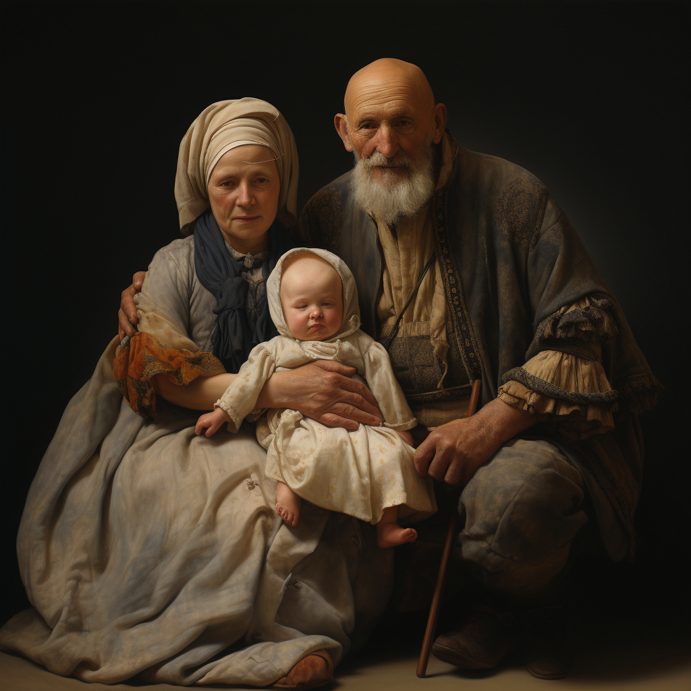
У старика со старухой не было детей. Век прожили, а детей не нажили.
Вот сделали они колодочку, завернули ее в пеленочку, стали качать да прибаюкивать:
– Спи-тко, усни, дитя Терешечка, –
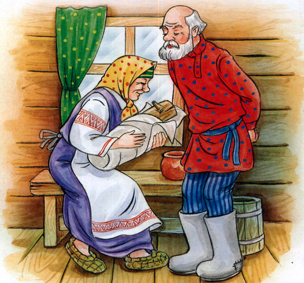
Все ласточки спят,
И касатки спят,
И куницы спят,
И лисицы спят,
Нашему Терешечке
Спать велят!
Качали так, качали да прибаюкивали, и вместо колодочки стал расти сыночек Терешечка – настоящая ягодка. Мальчик рос-подрастал, в разум приходил. Старик сделал ему челнок, выкрасил его белой краской, а весельцы – красной.
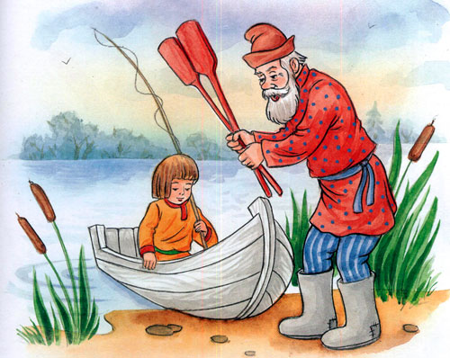
Вот Терешечка сел в челнок и говорит: – Челнок, челнок, плыви далече.
Челнок, челнок, плыви далече. Челнок и поплыл далеко-далеко. Терешечка стал рыбку ловить, а мать ему молочко и творожок стала носить. Придет на берег и зовет: – Терешечка, мой сыночек, Приплынь, приплынь на бережочек, Я тебе есть-пить принесла.
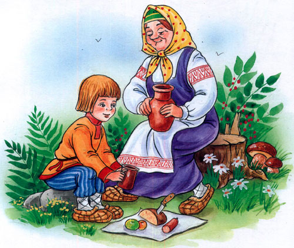
Терешечка издалека услышит матушкин голос и подплывет к бережку. Мать возьмет рыбку, накормит, напоит Терешечку, переменит ему рубашечку и поясок и отпустит опять ловить рыбку.
Узнала про то ведьма. Пришла на бережок и зовет страшным голосом:
– Терешечка, мой сыночек,
Приплынь, приплынь на бережочек,
Я тебе есть-пить принесла.
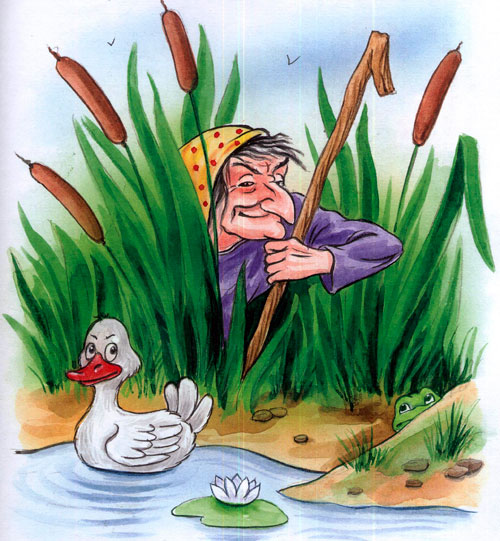
Терешечка распознал, что не матушкин это голос, и говорит:
– Челнок, челнок, плыви далече,
То не матушка меня зовет.
Тогда ведьма побежала в кузницу и велит кузнецу перековать себе горло, чтобы голос стал как у Терешечкиной матери.
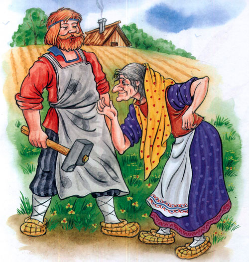
Кузнец перековал ей горло. Ведьма опять пришла на бережок и запела голосом точь-в-точь родимой матушки:
– Терешечка, мой сыночек,
Приплынь, приплынь на бережочек,
Я тебе есть-пить принесла.
Терешечка обознался и подплыл к бережку. Ведьма его схватила, в мешок посадила и побежала.
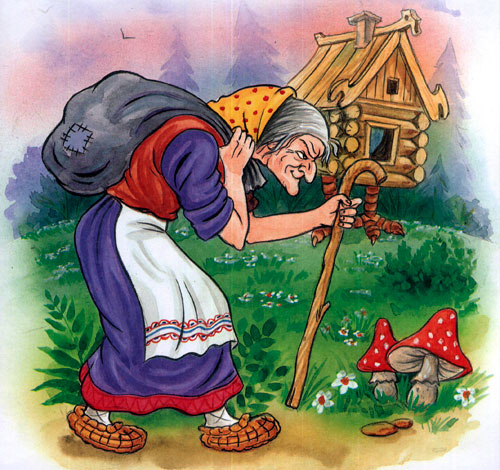
Принесла его в избушку на курьих ножках и велит своей дочери Аленке затопить печь пожарче и Терешечку зажарить.
А сама опять пошла на раздобытки. Вот Аленка истопила печь жарко-жарко и говорит Терешечке:
– Ложись на лопату.
Он сел на лопату, руки, ноги раскинул и не пролезает в печь.
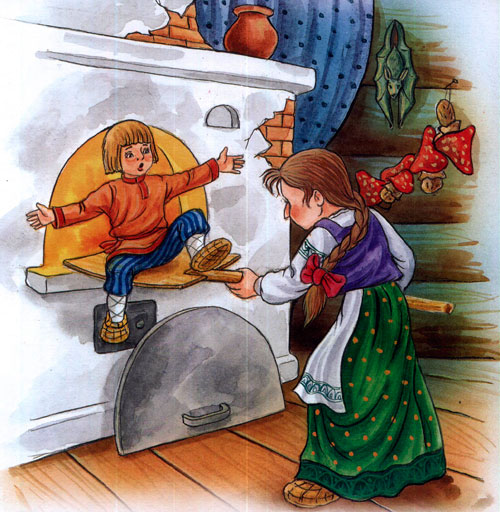
А она ему:
– Не так лег.
– Да я не умею – покажи как…
– А как кошки спят, как собаки спят, так и ты ложись.
– А ты ляг сама да поучи меня.
Аленка села на лопату, а Терешечка ее в печку и пихнул и заслонкой закрыл. А сам вышел из избушки и влез на высокий дуб.
Прибежала ведьма, открыла печку, вытащила свою дочь Аленку, съела, кости обглодала. Потом вышла на двор и стала кататься-валяться по траве.
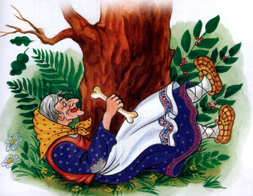
Катается-валяется и приговаривает:
– Покатаюсь я, поваляюсь я, Терешечкина мясца наевшись.
А Терешечка ей с дуба отвечает:
– Покатайся-поваляйся, Аленкина мясца наевшись!
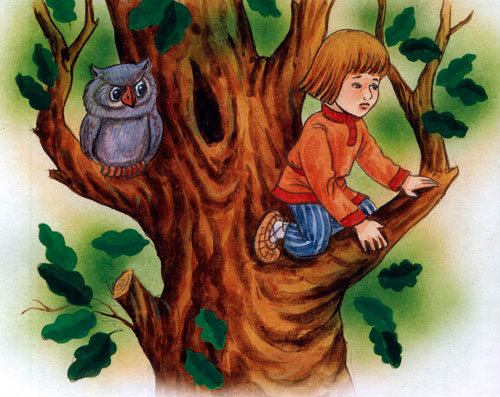
А ведьма:
– Не листья ли это шумят?
И сама – опять:
– Покатаюсь я, поваляюсь я, Терешечкина мясца наевшись.
А Терешечка все свое:
– Покатайся-поваляйся, Аленкина мясца наевшись!
Ведьма глянула и увидела его на высоком дубу.
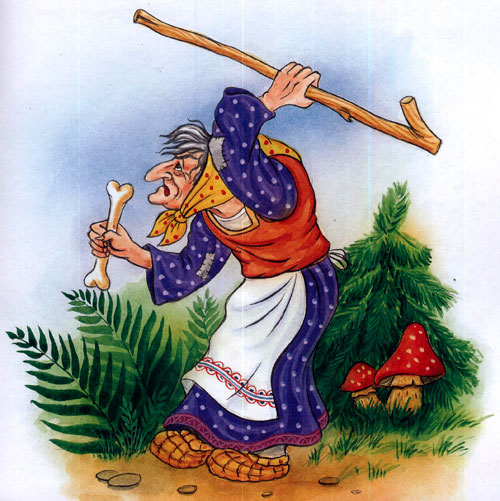
Кинулась грызть дуб. Грызла, грызла – два передних зуба выломала, побежала в кузницу: – Кузнец, кузнец! Скуй мне два железных зуба.
Кузнец сковал ей два зуба. Вернулась ведьма и стала опять грызть дуб. Грызла, грызла и выломала два нижних зуба. Побежала к кузнецу: – Кузнец-кузнец! Скуй мне еще два железных зуба.
Кузнец сковал ей еще два зуба. Вернулась ведьма и опять стала грызть дуб. Грызет – только щепки летят. А дуб уже трещит, шатается. Что тут делать?
Терешечка видит: летят гуси-лебеди. Он их просит:
– Гуси мои, лебедята!
Возьмите меня на крылья,
Унесите к батюшке, к матушке!
А гуси-лебеди отвечают:
– Га-га, за нами еще летят – поголоднее нас, они тебя возьмут.
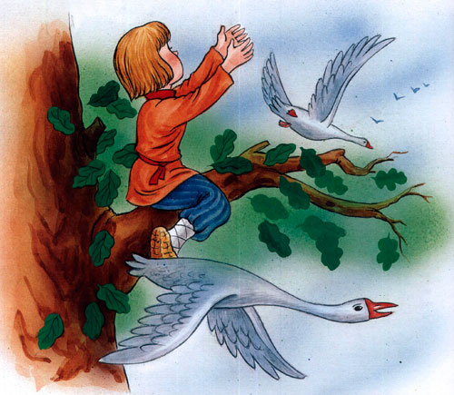
А ведьма погрызет-погрызет, взглянет на Терешечку, облизнется – и опять за дело…
Летит другое стадо. Терешечка просит…
– Гуси мои, лебедята!
Возьмите меня на крылья,
Унесите к батюшке, к матушке!
А гуси-лебеди отвечают:
– Га-га, за нами летит защипанный гусенок, он тебя возьмет-донесет. А ведьме уже немного осталось: вот-вот повалится дуб.
Летит защипанный гусенок. Терешечка его просит:
– Гусь-лебедь ты мой.
Возьми меня, посади на крылышки, унеси меня к батюшке, к матушке.
Сжалился защипанный гусенок, посадил Терешечку на крылья, встрепенулся и полетел, понес его домой.
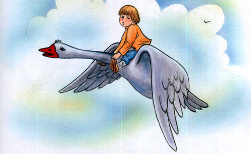
Прилетели они к избе и сели на травке.
А старуха напекла блинов – поминать Терешечку – и говорит:
– Это тебе, старичок, блин, а это мне блин.
А Терешечка под окном:
– А мне блин?
Старуха услыхала и говорит:
– Погляди-ка, старичок, кто там просит блинок?
Старик вышел, увидел Терешечку, привел к старухе – пошло обниманье!
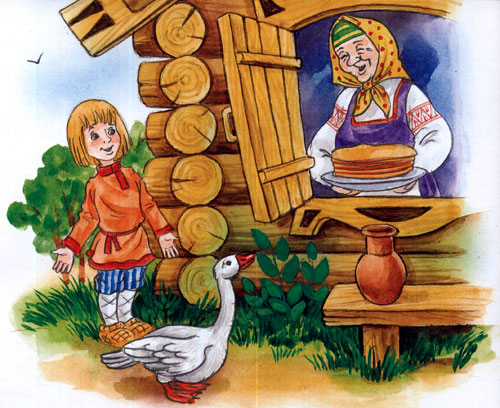
А защипанного гусенка откормили, отпоили, на волю пустили, и стал он с тех пор широко крыльями махать, впереди стада летать да Терешечку вспоминать.